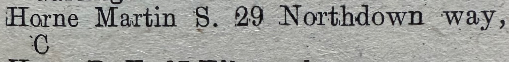
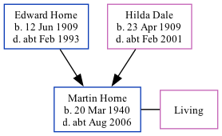

Martin Stuart Horne 1940 - c2006
[ Home ] | [ Calendar ] | [ Surnames Index ] | [ Family History ]The son of Edward Horne (a gardener heavy) and Hilda Dale, Martin Horne, the second cousin once-removed on the father's side of Nigel Horne, was born in Thanet, Kent, England on Mar 20, 19401. He married Pamela Vilarino de Llano in Thanet around Nov 19702.
Throughout his life, Martin lived in several places: at 29 Northdown Way, Cliftonville, Kent, England in 1974; in Broadstairs, Kent in 2002 (the same place as his mother had been living in 1932); and at The Old Store, 41 Nelson Place, Broadstairs, Kent in 2003. That is also where he died c. Aug 2006 in Thanet1.
Parents
- Edward John was born on Jun 12, 1909
- Hilda May was born on Apr 23, 1909
Citations
- England & Wales deaths 1837-2007 - Findmypast
- England & Wales marriages 1837-2008 - Findmypast
Media
1974 Kelly's Thanet Directory

England & Wales births 1837-2006 - BMD/B/1940/2/AZ/000585/066
England & Wales deaths 1837-2007 - BMD/D/2006/7/87150722
England & Wales marriages 1837-2008 Transcription - BMD-M-1970-4-AZ-000715-077
UK electoral registers 2002-2014 Transcription - 192-HORNE-MARTIN-CT10-280546032
England & Wales marriages 1837-2008 - BMD/M/1970/4/AZ/000715/076
Family Tree
Generated by Ged2Site. Last updated on Jul 20, 2025